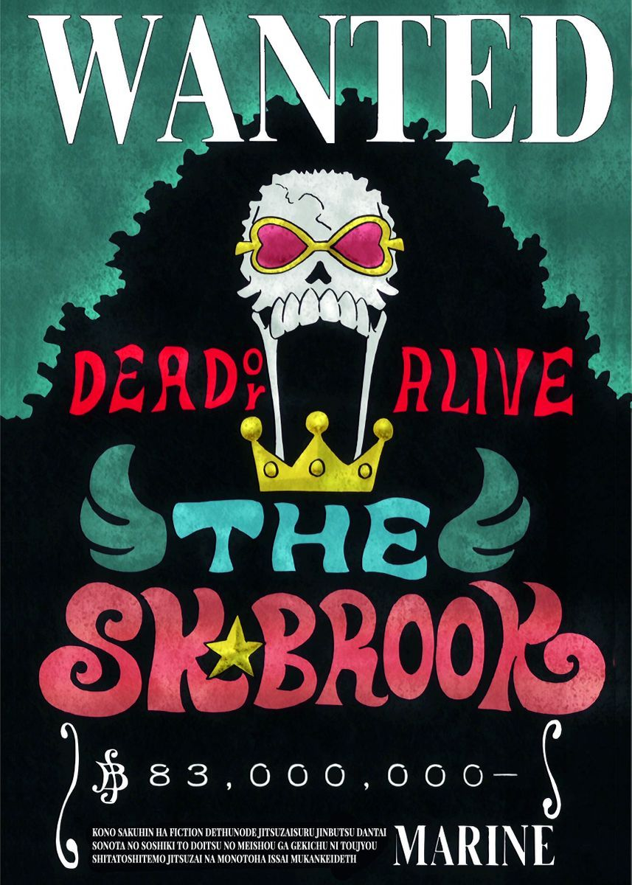
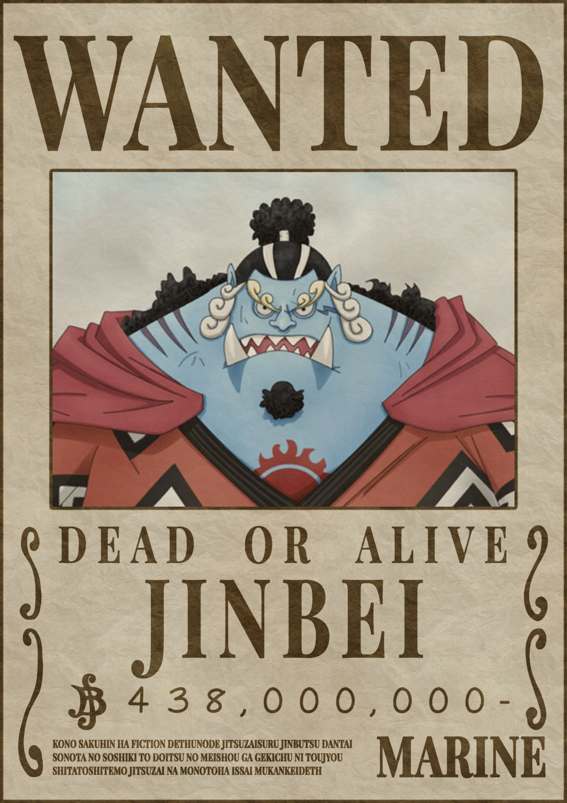

Sejarah
 One Piece adalah sebuah seri manga Jepang yang ditulis dan diilustrasikan oleh Eiichiro Oda. Manga ini telah dimuat di majalah Weekly Shōnen Jump milik Shueisha sejak tanggal 22 Juli 1997, dan telah dibundel menjadi 91 volume tankōbon. Ceritanya mengisahkan petualangan Monkey D. Luffy, seorang anak laki-laki yang memiliki kemampuan tubuh elastis seperti karet setelah memakan Buah Iblis secara tidak disengaja. Dengan kru bajak lautnya, yang dinamakan Bajak Laut Topi Jerami, Luffy menjelajahi Grand Line untuk mencari harta karun terbesar di dunia yang dikenal sebagai "One Piece" dalam rangka untuk menjadi Raja Bajak Laut yang berikutnya.
One Piece adalah sebuah seri manga Jepang yang ditulis dan diilustrasikan oleh Eiichiro Oda. Manga ini telah dimuat di majalah Weekly Shōnen Jump milik Shueisha sejak tanggal 22 Juli 1997, dan telah dibundel menjadi 91 volume tankōbon. Ceritanya mengisahkan petualangan Monkey D. Luffy, seorang anak laki-laki yang memiliki kemampuan tubuh elastis seperti karet setelah memakan Buah Iblis secara tidak disengaja. Dengan kru bajak lautnya, yang dinamakan Bajak Laut Topi Jerami, Luffy menjelajahi Grand Line untuk mencari harta karun terbesar di dunia yang dikenal sebagai "One Piece" dalam rangka untuk menjadi Raja Bajak Laut yang berikutnya.
Manga ini telah diadaptasi menjadi sebuah animasi video asli (OVA) yang diproduksi oleh Production I.G pada tahun 1998, dan sebuah serial anime yang diproduksi oleh Toei Animation, yang mulai tayang di Jepang pada tahun 1999. Sebagai tambahan, Toei juga telah memproduksi tiga belas film animasi, satu OVA dan sebelas episode khusus televisi. Beberapa perusahaan telah mengembangkan berbagai jenis pernak-pernik seperti permainan kartu dagang dan beberapa permainan video. Versi manganya telah dilisensi untuk dirilis dalam bahasa Inggris di Amerika Utara dan Britania Raya oleh Viz Media dan di Australia oleh Madman Entertainment. Versi animenya telah dilisensi oleh 4Kids Entertainment untuk perilisan versi bahasa Inggris di Amerika Utara pada tahun 2004, sebelum lisensi tersebut dicabut dan kemudian diakuisisi oleh Funimation pada tahun 2007.
One Piece telah menerima pujian atas alur cerita, gambar, karakterisasi, dan humornya. Beberapa volume dari manga ini telah memecahkan rekor penerbitan, termasuk cetakan awal tertinggi dari buku apa pun di Jepang. Situs web resmi untuk manga One Piece karya Eiichiro Oda mengumumkan bahwa manga ini telah meraih Guinness World Record untuk kategori "salinan terbanyak yang diterbitkan untuk seri buku komik yang sama oleh seorang penulis tunggal". Hingga bulan Mei 2018, manga ini telah terjual hingga lebih dari 440 juta kopi di seluruh dunia, menjadikannya seri manga terlaris dalam sejarah. One Piece juga menjadi manga terlaris selama sepuluh tahun berturut-turut pada tahun 2017.
Karakter
Daftar tokoh berikut ini hanya difokuskan pada Kelompok Bajak Laut Topi Jerami.
|
| Alias |
Topi Jerami, Manusia karet |
| Jabatan |
Kapten |
| Tebusan/Bounty |
฿1.500.000.000 |
Luffy memiliki cita-cita menjadi Raja Bajak Laut setelah bertemu dengan Shanks Si Rambut Merah yang singgah di pulau kelahirannya, Fusha. Topi jerami yang menjadi ciri khasnya adalah pemberian dari Shanks dan dia berjanji akan memberikan topi itu kembali kepadanya saat mereka bertemu kembali.
Luffy adalah pemakan buah iblis Gomu Gomu no Mi sehingga ia menjadi manusia karet. kemampuan ini membuat tubuhnya memiliki atribut yang sama dengan karet, seperti melar, peredam listrik, dsb.
Ciri khas bertarungnya adalah menyerang dengan memanjangkan bagian tubuhnya. Semua nama jurusnya selalu diawali dengan kata "Gomu-gomu" dan kemudian diikuti dengan nama senjata atau artileri (contoh: 'Gomu Gomu no Pistol', 'Gomu Gomu no Bazooka', 'Gomu Gomu no Gatling', dll).
Gear Second: Teknik mempercepat aliran darah tetapi organ tubuhnya tidak hancur karena atribut karet pada tubuhnya. Efek dari Gear Second ini adalah kecepatan atau agility meningkat. Kata "jet" juga ditambahkan dalam nama jurusnya (contoh: Gomu Gomu no Jet pistol). Jika ditambah dengan Haki, tinjunya jadi menimbulkan efek ledakan.
Gear Third: Teknik memperbesar tulang dengan meniupnya seperti balon. Efek dari Gear Third adalah kekuatan serangannya meningkat, namun kecepatan serangan menurun. Kata "Gigant" juga ditambahkan dalam nama jurusnya (contoh: Gomu Gomu no Gigant Pistol). Jika ditambahkan haki, tangannya menjadi hitam dan semakin keras.
Gear Four: Teknik memperbesar badan seukuran gorila, dengan menggabungkan boushuku haki. Kekuatan ini mirip tubuh gorila dengan daya hancur yang sangat kuat. Dan ditambah dengan kekuatan tinjuan yang bisa mental di udara. (kekuatan ini muncul di Dressrosa sewaktu melawan sichibukai Donquixote Doflamingo).
|
| Alias |
Pemburu Bajak Laut, Tiga Pedang |
| Jabatan |
Petarung, Beban Kapal,Pendekar Pedang |
| Tebusan/Bounty |
฿320.000.000 |
Ia merupakan anggota Bajak Laut Topi Jerami yang pertama kali bergabung dan hingga saat ini ia dinilai sebagai ancaman terbesar dan anggota paling berbahaya dari kelompoknya setelah sang kapten, Monkey D. Luffy. Popularitasnya yang tinggi sebagai seorang ahli pedang dengan kemampuan yang sangat hebat, bersamaan dengan sikap kekanakan dari kaptennya, terkadang membuat banyak orang menyangka bahwa ialah kapten yang sebenarnya atau setidaknya, wakil kapten dalam kelompoknya. Ia merupakan salah satu dari 3 petarung terkuat dalam kelompoknya dengan impian untuk menjadi ahli pedang terhebat di dunia. Zoro diberi gelar sebagai salah satu dari "Sebelas Supernova", yaitu sebelas bajak laut pemula dengan nilai tebusan lebih dari 100.000.000 Berry yang telah mencapai Red Line, dimana miliknya sendiri bernilai sebesar 120.000.000 Berry.
|
| Alias |
Kucing Pencuri |
| Jabatan |
Navigator |
| Tebusan/Bounty |
฿66.000.000 |
Ia merupakan anggota ketiga di kelompoknya, dan orang kedua yang bergabung. Di Arc Baratie, Nami sempat mengkhianati kelompoknya untuk sementara waktu, tetapi akhirnya bergabung kembali menjelang akhir Arc Arlong setelah masa lalu dan tujuannya yang sebenarnya terungkap. Ia memiliki jumlah tebusan sebesar 16.000.000 Berry. Ia merupakan navigator dari Kelompok Topi Jerami yang dapat merasakan perubahan cuaca dengan tubuhnya. Kemampuan lain selain navigasi adalah mencuri dan membuat peta. Cita-cita dari Nami adalah membuat peta seluruh dunia. Senjata yang digunakan adalah tongkat dengan berbagai modifikasi dari Usopp.
|
| Alias |
Hidung Panjang, Dewa Usopp, Soge King |
| Jabatan |
Penembak Jitu |
| Tebusan/Bounty |
฿200.000.000 |
Penembak jitu di Kelompok Bajak Laut Topi Jerami. Bercita-cita menjadi penembak jitu pemberani di seluruh lautan dan ingin pergi ke Pulau Elbaf. Ayahnya, Yasopp, adalah seorang penembak jitu di Kelompok Bajak Laut Shanks. Sangat suka berbohong, dan bercerita yang tinggi-tinggi. Bertarung dengan memakai tembakan katapel dengan peluru unik dan jebakan-jebakan. Setelah 2 tahun latihan mampu mengendalikan Pop Green, tumbuhan yang bisa tumbuh dengan agresif dan cepat. Di Arc Dressrosa Usopp mendapat kekuatan haki penglihatan, yang mana dia bisa melihat Sugar (anggota keluarga bajak laut Donquixote Doflamingo) ingin menyentuh Luffy dan Law dengan tujuan mengubah mereka menjadi mainan, dan dia bisa melihat jelas keberadaan Sugar dan menembakkan jebakan yang berisi gambar dirinya dengan mata dan lidah menjulur keluar. Menurut dirinya sendiri, dia termasuk 3 orang terlemah di kelompok, selain Nami dan Chopper. Usopp merupakan anggota yang sempat berselisih dengan Luffy di Arc Water 7 yang berakhir dengan duel antara Luffy vs Usopp di depan kapal Going Merry. Luffy memenangkan pertarungan dengan susah payah dan memutuskan untuk meninggalkan Usopp beserta Going Merry. Usopp secara 'resmi' keluar dari kelompok bajak laut topi jerami. Walaupun termasuk 3 terlemah, dia merupakan orang yang berani bertarung melawan sang kapten Monkey D. Luffy dan membakar bendera Pemerintah Dunia.
|
| Alias |
Kaki Hitam, Alis Melingkar |
| Jabatan |
Koki |
| Tebusan/Bounty |
฿330.000.000 |
Koki di anggota Bajak Laut Topi Jerami dan merupakan rival Roronoa Zoro. Sanji merupakan seorang bangsawan dari negeri kuat Germa 66. Ia melarikan diri dari kerajaannya menjadi seorang koki di sebuah kapal. Dia seorang Koki yang bercita-cita menemukan lautan legendaris di mana semua sumber bahan makanan berasal, yaitu All Blue. Ia juga merupakan murid dari Zeff si Kaki Merah, koki andal dari Restoran Baratie yang dulunya bajak laut. Sanji sangat genit terhadap wanita. Sanji mempunyai prinsip yaitu tidak akan melukai wanita walaupun harus mati. Sanji menggunakan kedua kakinya untuk bertarung dan tidak pernah menggunakan tangannya karena menurutnya, tangan adalah harta karun bagi seorang koki. Sanji bertarung dengan teknik tendangan yang sangat kuat. Dia juga bisa memakai tenknik "Diable Jump/Diable Jambe" yang membuat kakinya mengeluarkan api. Teknik ini bisa memperkuat tendangannya dan memberikan efek terbakar pada musuhnya. Termasuk 3 anggota terkuat Kelompok Topi Jerami. Selain itu jurus andalan terbarunya adalah Hell Memories yang mana jurus ini selalu mengingatkan dia sewaktu di Pulau Okama tempat Emporio Ivankov (anggota Pasukan Revolusi) dan jurus ini lebih hebat daya bakarnya ketimbang Diable Jambe dan Sky Walk yang bisa berjalan di atas langit.
|
| Alias |
Pecinta Permen Kapas |
| Jabatan |
Dokter |
| Tebusan/Bounty |
฿100 |
Dokter yang berwujud rusa kutub ini mempunyai tujuh wujud perubahan. Chopper mengemban keinginan dari dokter terhebat di dunia dokter Hiluluk, yang bercita-cita menyembuhkan segala penyakit yang ada di dunia. Dia pemakan buah iblis Hito Hito sehingga dapat berbicara layaknya manusia. Kekuatan buah Hito-Hito juga membuatnya bisa berubah menjadi berbagai macam wujud termasuk menjadi monster. Setelah 2 tahun, dia bisa memakai wujud monsternya tanpa kehilangan kesadaran.
|
| Alias |
Anak Iblis |
| Jabatan |
Arkeolog |
| Tebusan/Bounty |
฿130.000.000 |
Arkeolog satu-satunya di dunia yang tersisa dari Pulau Ohara yang meneliti asal usul penyandang inisial 'D' melalui Poneglyph yang mungungkapkan kejadian yang sebenarnya pada sejarah 100 tahun yang hilang. Merupakan buruan paling dicari oleh pihak pemerintah dunia karena dianggap sebagai iblis yang dapat mengacaukan perdamaian dunia. Hal ini dibuktikan dengan nilai buruan pada saat umurnya 8 tahun sangat tinggi. Pemakan buah iblis Hana Hana sehingga dapat menggandakan anggota tubuhnya di mana saja (tetapi lebih sering menggandakan tangannya). Bertarung dengan menggandakan tubuhnya, bisa digunakan untuk berbagai variasi jurus (seperti menumbuhkan tangan di tubuh lawan lalu memukulnya). Saat menggunakan kekuatannya dia menyilangkan tangannya.
|
| Alias |
Cyborg |
| Jabatan |
Tukang Kapal |
| Tebusan/Bounty |
฿94.000.000 |
Cyborg sekaligus Tukang kayu kapal yang bercita-cita membangun kapal impian, kapal yang mampu mengarungi seluruh lautan seperti kapal Raja Bajak Laut Gol D. Roger, Oro Jackson, yang dibuat oleh Tom. Saat Tom ditangkap oleh Angkatan Laut, Franky berniat menghentikan kereta api atas laut yang mengangkut Tom ke Ennies Lobby. Akibatnya, ia tertabrak kereta tersebut dan nyaris meninggal. Untuk bertahan hidup, ia mengubah struktur tubuhnya dengan berbagai teknologi hingga menjadi Cyborg. Teknik bertarung Franky cukup bervariasi. Ia menggunakan senjata yang tersembunyi di seluruh tubuhnya, dan menggunakan Cola sebagai bahan bakar. Dua tahun kemudian, setelah berkumpul kembali, Franky merakit ulang tubuhnya dengan teknologi canggih dari Angkatan Laut, yang merupakan hasil penelitian dari Vegapunk, seorang ilmuwan dari Angkatan Laut. Selain itu dia sekarang telah mengembangkan robot tempur yang ia namakan "General Iron Pirates" dan robot ini bisa berubah menjadi sepeda motor tempur dan tank baja.
|  |
| Alias |
Pendekar Bersenandung |
| Jabatan |
Musisi |
| Tebusan/Bounty |
฿83.000.000 |
Manusia tengkorak berambut afro dan juga seorang pemusik yang direkrut setelah peristiwa Thriller Bark. Dia merupakan bajak laut yang berjanji pada seekor paus yang bernama Laboon dan bercita-cita untuk meneruskan perjalanan hingga Raftel, pulau ujung dunia dan berjanji akan kembali lagi menemui Laboon. Bertarung dengan menggunakan pedang dan biolanya. Kekuatan musiknya bisa menghipnosis orang yang mendengarkan lagunya dan juga bisa menidurkan orang. Pemakan buah iblis Yomi Yomi yang artinya hidup kembali. Sebenarnya dia sudah lama meninggal, tetapi karena kekuatan buah iblis ini arwahnya kembali dan menemukan jasadnya yang telah tinggal tulang belulang. Setelah 2 tahun berlatih mampu menyambung tubuhnya yang putus, pedangnya bisa membekukan dan bisa mengeluarkan roh dari jasad tengkoraknya.
|  |
| Alias |
Ksatria Lautan |
| Jabatan |
Supir/Pengemudi Kapal |
| Tebusan/Bounty |
฿438.000.000 |
Namanya pertama kali disebutkan oleh Yosaku, saat dia menjelaskan tentang Shichibukai. Namun, dia secara resmi diperkenalkan jauh kemudian, selama Arc Impel Down. Dia melepaskan gelar Shichibukai-nya di Pertempuran Marineford, bersekutu dengan Bajak Laut Shirohige. Setelah kematian Shirohige, krunya membentuk aliansi dengan Big Mom untuk melindungi Pulau Manusia Ikan. Dia berteman dengan Monkey D. Luffy selama Pertempuran Marineford, dan kemudian bersekutu dengan dia dan krunya untuk mencegah kudeta Bajak Laut Manusia Ikan Baru melawan Keluarga Kerajaan Neptunus dan Kerajaan Ryugu. Luffy mengundangnya untuk bergabung dengan Topi Jerami, tetapi Jinbe menahannya sampai dia memutuskan hubungan dengan Big Mom. Dia kemudian akan melakukannya selama Arc Pulau Whole Cake dan secara resmi menjadi anggota Topi Jerami.
Atas kekacauan yang telah diperbuatnya, angkatan laut menaikkan bounty Jinbei menjadi ฿438.000.000.